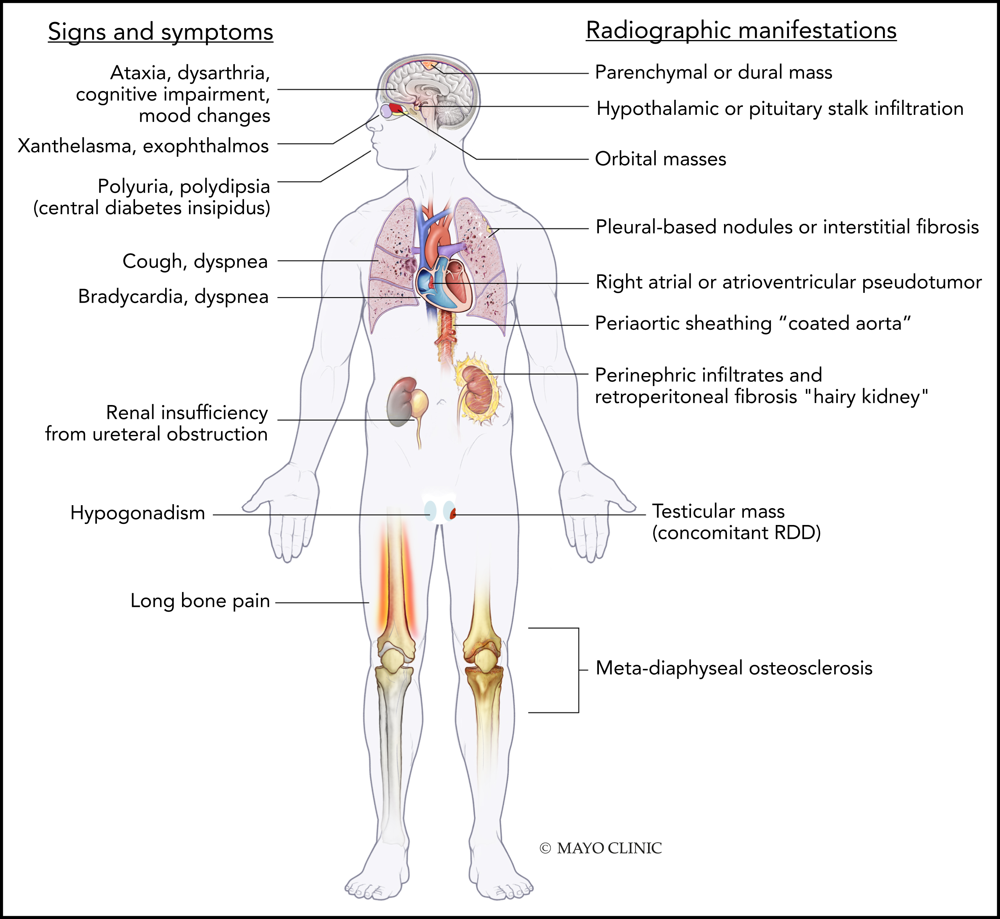

Erdheim-Chester Disease
Introduction
Erdheim-Chester disease (ECD) is a rare non-Langerhans neoplastic histiocytic disorder with diverse clinical manifestations, ranging from indolent, localized presentations to life-threatening, multisystem disease.
Etiology
Found to be a clonal neoplastic disorder, secondary to recurrent activating MAPK (RAS-RAF-MEK-ERK) pathway mutations.
Epidemiology
Incredibly rare, only about 800 cases reported in the literature. ECD is primarily a disease of middle-aged adults, with a mean age of 46 years at diagnosis in the United States. Male predominance (75%).
Evaluation
Clinical Manifestations
Very diverse set of presentations. It is important to rule out concomitant myeloid neoplasms among ECD patients due to their high rates of co-occurrence.
Key Clinical Features of Erdheim-Chester Disease
- lower extremity bone pain and bilateral osteosclerosis of metadiaphyses in lower limbs
- HPA axis and neuro-ophthalmologic abnormalities including central diabetes insipidus
- asymptomatic restrictive lung disease
- large-vessel vascular disease: aorta, renal
- pericardial effusions
- "hairy kidney" and perinephric retroperitoneal fibrosis
- myeloid neoplasms
- xanthelasma
| Organ | Clinical and radiographic features |
|---|---|
| Bones | Lower-extremity bone pain is the most common presenting symptom (50%); full-body (skull-to-toes) FDG-PET-CT scan or 99mTc bone scintigraphy shows bilateral symmetric osteosclerosis of metadiaphysis of femur, tibia, and fibula in >95% cases and is pathognomonic; skull and axial skeleton less commonly involved than LCH, which typically shows lytic punched-out lesions rather than sclerotic lesions that are seen in ECD |
| Nervous system | Seen in 25% to 50% patients, with predilection toward brain parenchyma of the posterior cranial fossa and dura, although infiltrations can occur throughout the neuraxis; these abnormalities often but do not invariably demonstrate gadolinium enhancement; rarely, may present with nontumorous neurodegenerative-like (atrophic) changes in the brainstem and cerebellum |
| Retinal involvement has been reported as well. | |
| Clinical manifestations depend on the site of involvement, and may include ataxia, dysarthria, cognitive impairment, headaches, or peripheral neuropathy; some patients may present with mood lability | |
| Endocrine | Anterior and posterior pituitary abnormalities (40% to 70%); most commonly central DI (25% to 50%) and may precede the diagnosis of ECD by several years, sometimes decades; other pituitary hormone deficiencies that are commonly seen are growth hormone, gonadotropin, thyrotropin, and corticotropin; hyperprolactinemia can be seen in 15% to 30% patients; although normal pituitary imaging does not exclude hormonal deficiency, an abnormal pituitary stalk MRI is commonly associated with hypopituitarism; primary hypothyroidism (20%), hypogonadism (19%), and adrenal insufficiency (6%) can be seen as well |
| Orbit | Unilateral or bilateral infiltration seen in 25% to 30% of patients; clinical manifestations include exophthalmos, retro-orbital pain, oculomotor nerve palsy or vision loss; differential diagnosis includes xanthogranuloma, RDD, Graves disease, granulomatous disease, and IgG4-related disease |
| Respiratory | Lung involvement in ECD is mostly asymptomatic and seen radiologically in ∼50% of cases, involving either the lung parenchyma or pleura; unlike pulmonary LCH, no association with cigarette smoking has been reported; although plain chest radiographs can be normal, findings on CT of the chest may include mediastinal infiltration, pleural thickening or effusions, interlobular septal thickening, ground-glass opacities, or centrilobular opacities; pulmonary function tests commonly reveal a more restrictive as compared with an obstructive pattern; ECD may also involve facial sinuses, with maxillary sinus thickening in ∼50% patients |
| Cardiovascular | Cardiovascular involvement may be asymptomatic but can be seen in 50% to 70% patients at imaging evaluation by CT and/or MRI; most common findings include pericardial infiltration with effusion (which may be complicated by tamponade) or myocardial infiltration in the form of right atrioventricular pseudotumor (40%); circumferential soft tissue sheathing of the thoracic/abdominal aorta and its branches may be seen as “coated” aorta may be seen on CT scan (50% to 60%); periarterial involvement of renal vessels may lead to renovascular hypertension (20%), is responsive to stenting, and can be monitored with renal artery dopplers; involvement of other visceral vessels has been reported as well; coronary arteries may be involved in 30% to 50% of patients |
| Retroperitoneum, including kidney | Manifesting as infiltrative perinephric soft tissue thickening, or “hairy kidney” (50% to 60%); perinephric infiltrates can rarely extend to involve the renal pelvis and/or renal ureters causing hydronephrosis and renal failure requiring dialysis and nephrostomy with stent placement; in some cases, it may also extend to involve the adrenal glands; longstanding perinephric ECD may lead to atrophy of kidneys; differential diagnosis includes retroperitoneal fibrosis and IgG4-related disease |
| Cutaneous | Seen in 20% to 30% patients, with one-half of the patients manifesting skin lesions as initial ECD presentation; most common cutaneous manifestation is xanthelasma, occurring as yellowish plaques around the eyelids but can occur as yellowish-brown papules or plaques on the face, neck, axilla, trunk or groin as well; it may also present as subcutaneous nodules or granuloma annulare-like lesions |
| Reticuloendothelial and hematopoietic system | In one study, 11% of ECD patients had liver and spleen involvement, respectively, although the prevalence has been lower in other series; ECD rarely involves the lymph nodes, but may involve bone marrow in 8% of cases; ECD may also be associated with concomitant myeloid neoplasms in 10% of cases, specifically myeloproliferative neoplasm, myelodysplastic syndrome, or mixed myelodysplastic/myeloproliferative overlap syndrome including chronic myelomonocytic leukemia |

Diagnosis
ECD is not exclusively a pathologic diagnosis, and it is necessary to interpret histopathologic features in conjunction with clinical, radiographic, and, as of recently, molecular findings. ECD patients may see multiple providers and undergo several biopsies that have, historically, led to delayed diagnosis and institution of therapy in most patients, with the average time from symptom onset to diagnosis being a few months to several years.
- FDG PET-CT for ?symmetric osteosclerosis of the metadiaphysis of the lower-extremity bones as this is pathognomnic and present in 95% of cases.
- Tissue biopsy is required in all ECD cases, not only for confirmation of diagnosis, but also to allow identification of associated mutations for therapeutic purposes. As most ECD patients harbor activating somatic mutations or fusions in the genes of the MAPK-ERK or the PI3K-AKT pathway, molecular profiling of biopsy material can increase confidence in an ECD diagnosis in cases with ambiguous histopathological findings and/or absence of osseous lesions.
- BRAF-V600E mutation testing should be pursued for all patients
Management
Baseline Evaluation
- recommend FDG PET-CT imaging including the brain and distal extremities, MRI of the brain with gadolinium, and cardiac MRI in all newly diagnosed patients
- Dedicated CT of the chest, abdomen, and pelvis is recommended to demonstrate pulmonary, periaortic, and perinephric infiltrates
- Laboratory studies are needed to assess endocrinopathies, peripheral blood count abnormalities, renal/hepatic function, immunological assessment, and the degree of inflammation

Treatment
Most patients with ECD require systemic treatment at diagnosis, with the exception of asymptomatic nonvital single-organ (eg, bone) or minimally symptomatic disease that may be monitored.
The therapeutic landscape of ECD and related histiocytic neoplasms has changed drastically over the last 5 years due to the discovery of activating and targetable MAPK-ERK pathway mutations in the vast majority of patients: 1. BRAF inhibitors 1. Vemurafenib: most common adverse effects include cutaneous complications (rash, squamous cell cancer), arthralgia, QTc prolongation, and fatigue. 2. Dabrafenib: similar efficacy to vemurafenib, and less cutaneous toxicity than vemurafenib. 2. MEK inhibitors 1. Cobimetinib 2. Trametinib 3. First-line conventional therapy 1. IFN-α. Case series have demonstrated survival benefit with the use of some form of IFN-α; high-dose IFN-α for patients with CNS or cardiac involvement; major limitation is the high frequency of systemic adverse effects. 2. Cladribine. Prophylactic antimicrobials against Pneumocystis jirovecii (cotrimoxazole) and viruses (acyclovir, valacyclovir) should be added during the duration of the treatment and until the lymphocyte count normalize. 3. Anakinra. Especially effective for bone pain and constitutional symptoms. 4. Second-line conventional therapy 1. Sirolimus + prednisone 2. Imatinib 3. Infliximab 4. Tocilizumab 5. MTX
Followup and Prognosis/Outcomes
- FDG-PET-CT is considered the optimal modality for ECD response assessment. FDG PET imaging should be obtained 3 to 6 months after initiation of therapy to assess metabolic response. Complete metabolic response, that is, normalization of lesion FDG avidity to that of the surrounding organ background, is considered the optimal response to ECD therapy.
- Organ-specific imaging such as CT or MRI (eg, heart, brain, orbit) should be performed every 3 to 6 months initially, and every 6 to 12 months once disease stabilizes. Because of the tissue fibrosis associated with ECD, treated lesions may not fully regress, and therefore the degree of anatomic response (ie, shrinkage of lesions by CT/MRI) may not accurately reflect disease activity or response to treatment. This is particularly characteristic of longstanding lesions in the retroperitoneum, abdomen, orbits, and sinuses. Hence, anatomic, metabolic, and clinical responses must be considered in light of one another.
- Although skin involvement by ECD may respond to treatments, endocrinopathies are typically permanent. Additionally, monitoring for pituitary hormone abnormalities every 1 to 2 years is recommended.
- relapse is likely in BRAF-V600–mutant ECD in the setting of complete cessation of vemurafenib without achieving sustained CR
- The prognosis of ECD can vary based on the site of disease and the response to therapy. Advances in diagnosis and therapeutics of ECD are underscored by the tremendous improvement in 5-year OS rates over the last 2 decades, from 43% in a study from 1996 to 83% in a recent study.